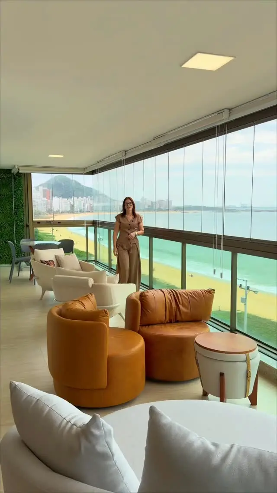
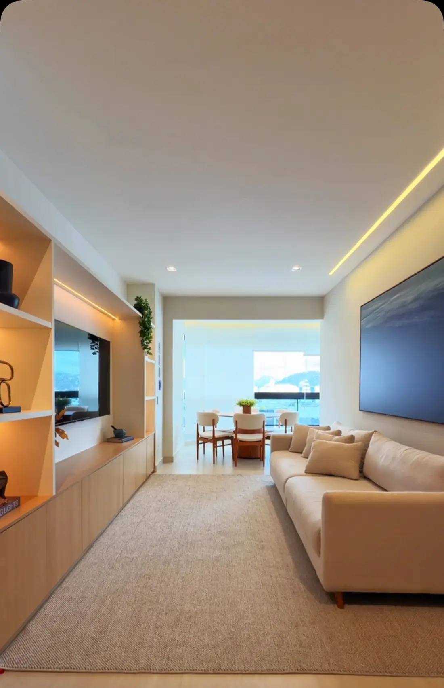
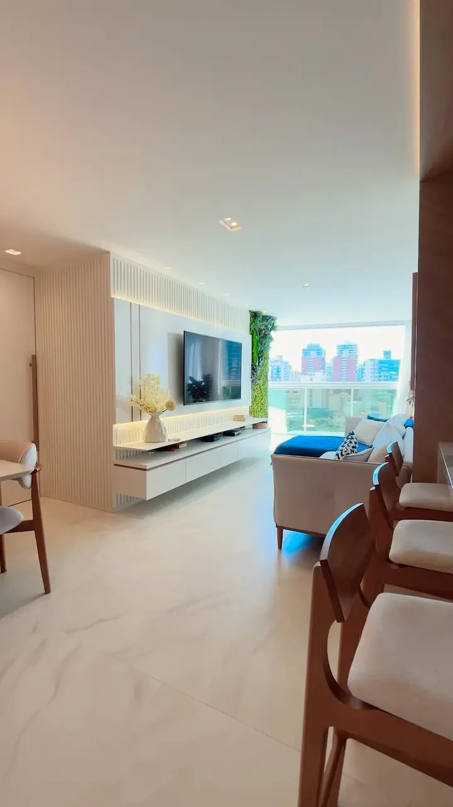
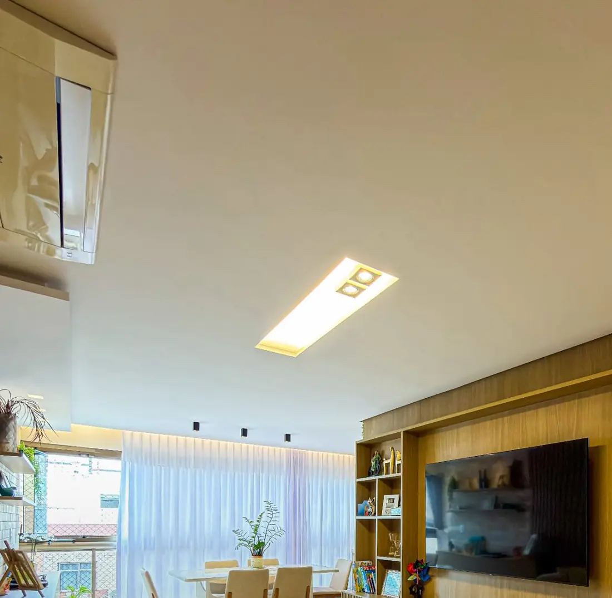
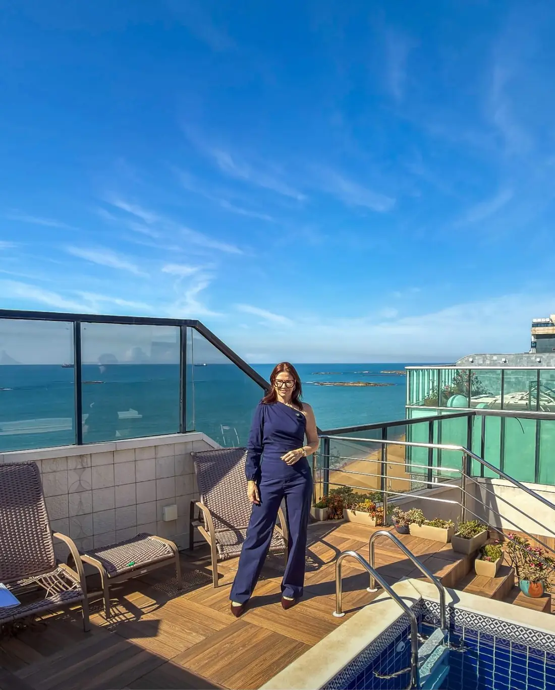
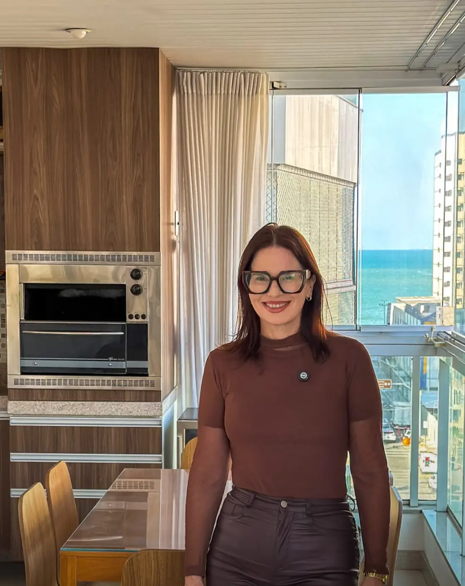

Desirée Meireles, corretora de imóveis em Vila Velha
A vista é o endereço.
Curadoria para morar ou investir bem, na orla de Vila Velha. Visitas com hora marcada.
Qualidade, localização e decisões seguras .

Imóveis em destaque




A orla, do jeito que eu a conheço.
Esta é a costa de Vila Velha, de Itaparica ao Morro do Moreno. Toque num bairro para ver o que eu tenho por lá.
Itapuã
Quadra do mar e frente para o mar. É onde está a maior parte do que eu mostro: de apartamentos de 80 m² a coberturas com piscina privativa, mais o pré-lançamento do Vert.
Praia da Costa
Cobertura duplex de frente para o mar, apartamentos na quadra do mar e reformados, com posição de frente e sol da manhã.
Itaparica
Apartamentos prontos para morar, vendidos porteira fechada, com varanda de vidro, sol da manhã e lazer completo no condomínio.
Oceano Atlântico
Costa: © colaboradores do OpenStreetMap
Visitas com hora marcada. Eu vou com você.
Conversa
Você me conta o que procura: onde, quantos quartos, para morar ou investir. Eu ouço antes de mostrar.
Curadoria
Separo poucos imóveis que fazem sentido. Nada de lista de vinte opções.
Visita com hora marcada
Combinamos o dia e o horário e eu vou com você. Sem fila de curiosos e sem pressa.
Escritura
Se você decidir, eu acompanho a documentação até a escritura.
Agende uma visita
Escolha o imóvel, o dia e o horário. Quando você tocar no botão, o WhatsApp abre com a mensagem pronta para mim. Eu confirmo o horário por lá.
Vamos ver o seu imóvel como quem procura.
Se eu estivesse procurando um apartamento hoje, faria questão de conhecer o seu. Me conte o básico e eu respondo pelo WhatsApp.
Quanto fica a parcela?
Uma conta simples para ter uma ideia. Digite a taxa que o seu banco oferece.
Quem vai com você na visita.
Sou a Desirée, corretora de imóveis em Vila Velha. Trabalho com apartamentos e coberturas em Itapuã e Praia da Costa, de frente para o mar ou a poucos passos dele.
Qualidade, localização e decisões seguras: é assim que eu escolho o que mostro. Curadoria para morar ou investir bem.
Estar na quadra do mar não é apenas localização. É definição de patrimônio.
CRECI-ES 011036-F